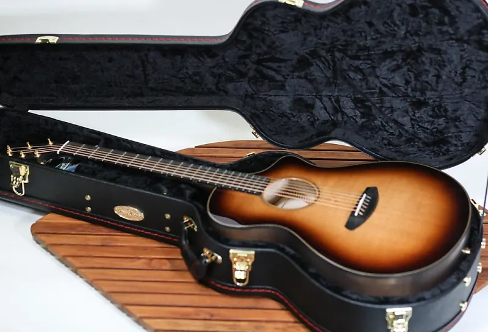

Just wrapped up an epic hike through the Grand Canyon! 🏜️ The views were breathtaking, and the challenge was worth every step. Highly recommend this adventure to anyone looking to be humbled by nature's grandeur! #Hiking #GrandCanyon #AdventureLife
Home
Just cooked up some homemade pasta for dinner, and it turned out amazing! 🍝 Who knew I had this culinary side? Feeling like a pro chef tonight. #HomemadePasta #ChefLife #ProudMoment

Finally finished reading Harry Potter and the Sorcerer's Stone—and I loved it! ✨ I can’t believe it took me this long to start. Ready to dive into the rest of the series! #HarryPotter #BookWorm #LateToTheParty

Just got my new guitar! 🎸 Super excited to start learning and would love some tips on the best way to get started. Also, drop your favorite places or websites to grab guitar parts and accessories. Appreciate it, guitar fam! #NewGuitar #GuitarTips #MusicGear
